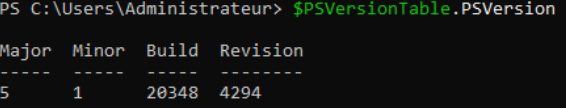
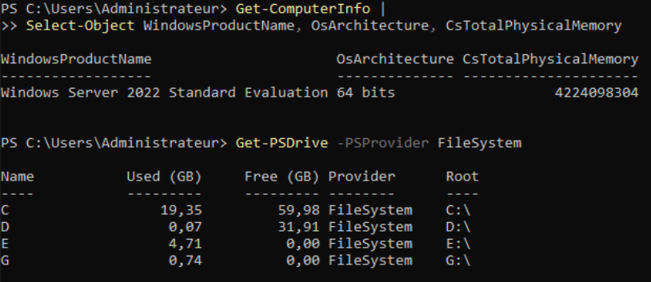
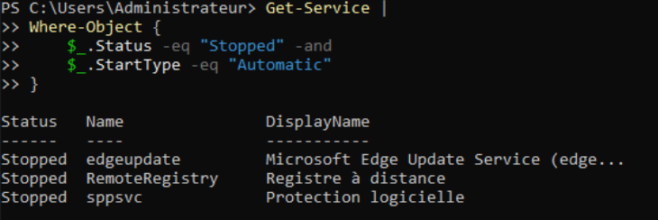
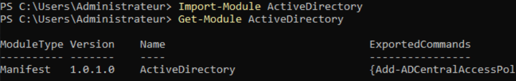
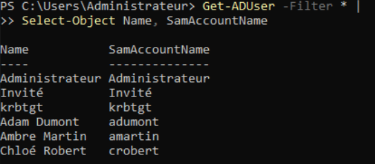
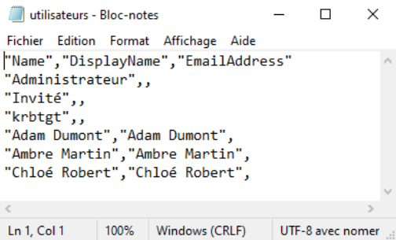
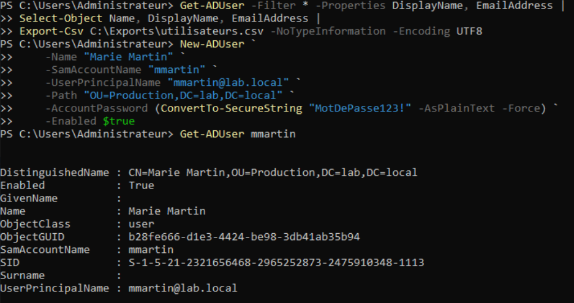
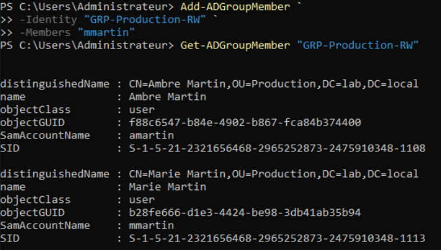
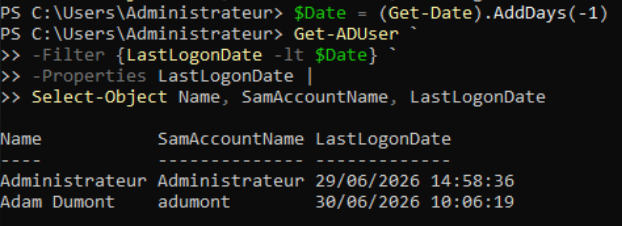
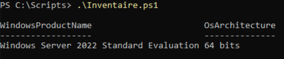

TP12 - PowerShell
Théorie : Cours - PowerShell Bases · Cours - PowerShell Scripts AD · Cours - PowerShell Scripts Administration Captures :
99-Captures/TP12/· Prérequis : TP11-GPO
Objectif
Découvrir l'administration système avec PowerShell en automatisant plusieurs tâches courantes :
- obtenir des informations sur le système ;
- administrer Active Directory ;
- exporter des données ;
- créer des scripts réutilisables.
À l'issue de ce TP, vous disposerez d'une première boîte à outils PowerShell pour administrer votre laboratoire.
Prérequis
- [v] TP11-GPO validé
Étapes
1. Ouverture de PowerShell
Sur SRV-DC01, ouvrir PowerShell en tant qu'administrateur.
Vérifier la version installée :
$PSVersionTable.PSVersion

Version de PowerShell2. Informations système
Afficher quelques informations sur le serveur :
Get-ComputerInfo |
Select-Object WindowsProductName, OsArchitecture, CsTotalPhysicalMemory
Afficher également :
Get-PSDrive -PSProvider FileSystem
Repérer :
- les lecteurs disponibles ;
- l'espace libre.

Informations système et lecteurs3. Services Windows
Afficher les services démarrés :
Get-Service |
Where-Object {$_.Status -eq "Running"}
Puis les services arrêtés configurés en démarrage automatique :
Get-Service |
Where-Object {
$_.Status -eq "Stopped" -and
$_.StartType -eq "Automatic"
}

Services Windows4. Import du module Active Directory
Charger le module :
Import-Module ActiveDirectory
Vérifier que le module est disponible :
Get-Module ActiveDirectory

Module Active Directory5. Lister les utilisateurs
Afficher les utilisateurs du domaine :
Get-ADUser -Filter *
Afficher uniquement :
Get-ADUser -Filter * |
Select-Object Name, SamAccountName

Liste des utilisateurs6. Exporter les utilisateurs
Exporter les utilisateurs dans un fichier CSV.
Créer le dossier :
C:\Exports
Puis exécuter :
Get-ADUser -Filter * -Properties DisplayName, EmailAddress |
Select-Object Name, DisplayName, EmailAddress |
Export-Csv C:\Exports\utilisateurs.csv -NoTypeInformation -Encoding UTF8
Ouvrir ensuite le fichier CSV afin de vérifier son contenu.

Export CSV7. Créer un utilisateur avec PowerShell
Créer un nouvel utilisateur :
New-ADUser `
-Name "Marie Martin" `
-SamAccountName "mmartin" `
-UserPrincipalName "mmartin@lab.local" `
-Path "OU=Production,DC=lab,DC=local" `
-AccountPassword (ConvertTo-SecureString "MotDePasse123!" -AsPlainText -Force) `
-Enabled $true
Vérifier sa création :
Get-ADUser mmartin

Création d'un utilisateur8. Ajouter un utilisateur à un groupe
Ajouter l'utilisateur au groupe Production :
Add-ADGroupMember `
-Identity "GRP-Production-RW" `
-Members "mmartin"
Vérifier les membres du groupe :
Get-ADGroupMember "GRP-Production-RW"

Ajout à un groupe9. Comptes inactifs
Lister les comptes n'ayant pas ouvert de session depuis 90 jours :
$Date = (Get-Date).AddDays(-90)
Get-ADUser `
-Filter {LastLogonDate -lt $Date} `
-Properties LastLogonDate |
Select-Object Name, SamAccountName, LastLogonDate
Observer le résultat.

Comptes inactifs depuis 1 jour10. Création d'un script
Créer le dossier :
C:\Scripts
Créer un fichier :
Inventaire.ps1
Y copier :
Get-ComputerInfo |
Select-Object WindowsProductName, OsArchitecture
Get-PSDrive -PSProvider FileSystem
Get-Service |
Where-Object {$_.Status -eq "Stopped" -and $_.StartType -eq "Automatic"}
Enregistrer puis exécuter le script :
.\Inventaire.ps1

Premier script PowerShellValidation
- [v] PowerShell est fonctionnel
- [v] Les informations système sont affichées
- [v] Les services Windows sont listés
- [v] Le module Active Directory est chargé
- [v] Les utilisateurs sont exportés au format CSV
- [v] Un utilisateur est créé en PowerShell
- [v] L'utilisateur est ajouté à un groupe
- [v] Les comptes inactifs sont affichés
- [v] Un premier script PowerShell est créé
Progression
| Étape | Lien |
|---|---|
| Prérequis | TP11-GPO |
| Suite recommandée | → Cours - Sauvegardes |
| Branches | Cours - PowerShell Scripts AD |
| Théorie | Cours - PowerShell Bases · Cours - PowerShell Scripts AD · Cours - PowerShell Scripts Administration |
Suivi : Progression